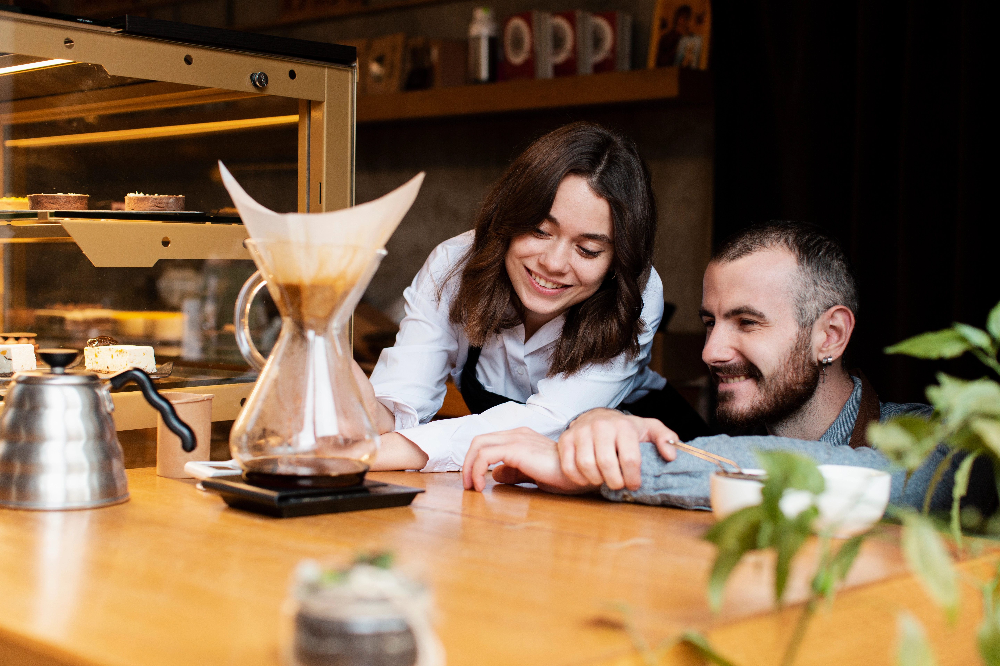
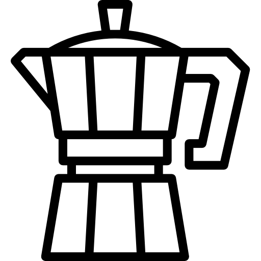
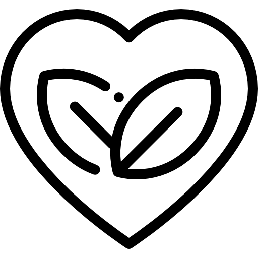

Acerca de Cavero
CAVERO nace del cruce entre nuestro amor por el café de especialidad y la conexión con la naturaleza. Somos Lali y Lucas, una pareja que decidió transformar sus pasiones en un espacio real, donde cada detalle está pensado para brindar una experiencia sensorial auténtica, cercana y viva.

"De un sueño compartido, a un rincón que hoy es real."
Nuestra historia
Todo comenzó con una charla entre plantas y café, de esas que invitan a imaginar una vida más simple, consciente y conectada. Así nació nuestro deseo de crear un lugar que combine lo que más amamos: el diseño de espacios verdes, la cultura del café, y los pequeños rituales cotidianos que nos traen bienestar.
Venimos de mundos distintos, pero complementarios. Lali viene del arte y el paisajismo, con una profunda conexión con la estética y los entornos naturales. Lucas del universo del café, la tecnología y la búsqueda de eficiencia. Juntos decidimos unir nuestras trayectorias para dar vida a un proyecto que nos represente por completo.
Después de años de experiencia en nuestros rubros, creamos CAVERO: una cafetería de autor que convive con un vivero. Un lugar pensado para disfrutar un buen café, rodeado de verde, con tiempo para uno mismo o en compañía.
Queremos que cada persona que entra sienta que este lugar fue hecho con dedicación. Que no solo venga a tomar un café, sino a vivir una pausa.
"Donde el café se volvió parte de nuestra historia."
Un rincón con aroma a café y verde. Cada detalle en Cavero cuenta algo de nosotros. Desde la elección de las plantas hasta la preparación del café, todo está elegido con intención. Buscamos que, al cruzar la puerta, el ritmo baje, que puedas respirar hondo y encontrar un momento de conexión.
No somos una cafetería más, ni un vivero más. Somos un espacio vivo, que crece, cambia con las estaciones y siempre está listo para recibirte con calidez, naturaleza y un café hecho con amor.

Café de especialidad
Granos únicos y métodos precisos para una experiencia sensorial auténtica. Cada taza conecta con sabores genuinos.

Amor por lo natural
Plantas, flores y aromas forman parte de la experiencia Cavero. Creemos en lo orgánico y crear un oasis verde único.
Atención cercana
Nos gusta conocer a nuestros visitantes y hacerlos sentir parte. Cavero es tu segundo hogar con sonrisas y calidez.